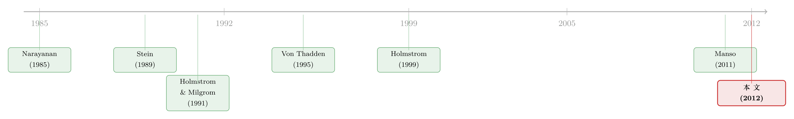

归属期越长，越能治短视吗？——一个被「换帅威胁」掰弯的常识
本文读的是 Laux (2012, Journal of Financial Economics)：一旦把「CEO 可能在中途被换掉」这件事写进模型，长归属期 (long vesting period) 的股票期权不再单纯地遏制短视，反而可能亲手逼出短视——而最优合约的解药，是让一部分期权提前归属。更反直觉的是：管理层短视并不一定是「坏薪酬」或「没耐心的股东」造成的畸形，它可以是最优合约下内生的产物。
1 引言：一条人人点头的「常识」，和它的裂缝
关于高管薪酬，有一条几乎被写进每一份政策建议里的常识：要治管理层短视 (managerial myopia)，就把薪酬和长期业绩绑死——多发长归属期的股票期权，让高管只有熬到很久以后才能拿到钱。金融危机之后，这条逻辑被反复念诵（Bebchuk and Fried, 2010；Bhagat and Romano, 2010）：绑得越长，高管就越不会为了眼前的股价去牺牲长远价值。
听上去无懈可击。归属期拖得越长，期权要兑现就越要等公司长期表现兑现，高管自然会把目光放远——这几乎是定义本身。
但这条常识里藏着一个被悄悄省略的前提：它默认这位 CEO 会一直在位，直到期权归属那天。
现实并非如此。CEO 会被董事会换掉，而且常常是在中途、在长期业绩还远未兑现的时候。问题来了：如果一个人在期权归属之前就被解雇，那些还没归属的期权会怎样？Yermack (2006) 数过 179 个高管离任的案例，答案很干脆——除非到了最低退休年龄，离任高管基本上要作废手里所有尚未归属的期权和股份。
于是这篇论文抛出的张力就出现了：当「被换掉就会丧失未归属期权」这件事成立时，长归属期到底是在拉长 CEO 的视野，还是在做别的什么？
把这条裂缝想清楚，是理解全文的钥匙：长归属期把 CEO 的钱押在了「不被解雇」上，而董事会判断要不要解雇他，靠的恰恰是短期业绩。绑住长期，结果却让 CEO 死盯短期——逻辑就这样反转了。
2 模型：三期、三方、两个决策
模型干净得近乎残忍。三个风险中性的参与者：股东、代表股东利益的董事会、以及 CEO。三个时点 \(t_0,t_1,t_2\)。
- \(t_0\)：董事会雇一位新 CEO，给他一份激励合约。签约后，CEO 做两件事。
- \(t_1\)：短期现金流 \(x_1\) 实现，董事会据此决定换不换人。
- \(t_2\)：长期现金流 \(x_2\) 实现，博弈结束。
CEO 要做的「两件事」，正是全文的两条主线：
第一件，努力 (effort)。 CEO 选一个不可观测的努力 \(e\in\{e_L,e_H\}\)，去积累公司专用人力资本。高努力 \(e_H\) 的私人成本是 \(k\)（\(v(e_H)=k,\ v(e_L)=0\)）。努力影响的是他的「天赋适配」：选 \(e_H\)，他以概率 \(p\) 是好苗子（\(F=G\)），以 \(1-p\) 是次品（\(F=B\)）；选 \(e_L\)，则铁定是次品。注意 \(F\) 谁都看不见——连 CEO 自己也不知道（这是 Holmstrom (1999) 的职业生涯关注 (career concerns) 设定）。
第二件，投资 (investment)。 CEO 有 1 块钱资本，把 \(I\le 1\) 投到长期项目、\(1-I\) 投到短期项目。这个决策不可观测、也不可签约。投得越多在短期（长期），第一期（第二期）成功的概率越高。具体地，若 CEO 是好苗子：
$$ \Pr[x_1=X_1] = s\big(a_1+(1-I)\big), \qquad \Pr[x_2=X_2] = s\big(a_2+I\big) $$
其中 \(a_1,a_2\in[0,1]\) 是外生参数，\(s\in(0,0.5]\) 是个保证概率不超过 1 的缩放系数。现金流非高（\(X_i>0\)）即低（\(0\)）。这里有个关键的细节：\(a_1\) 是与投资无关、由公司日常运营带来的那部分一期成功率。正因为 \(a_1>0\)，即便 CEO 把钱全砸在长期项目（\(I=1\)），短期现金流依然携带着关于他天赋的信息——这一点等会儿会要命。
论文还假定长期项目严格比短期项目更赚（\(X_2\) 足够大于 \(X_1\)），所以「该不该投长期」从效率上看本不该是个问题。可正是在这个「长期明明更好」的世界里，短视照样冒了出来。
合约写成 \(c=(b,E,a,b_V,b_E)\)：期权数量 \(b\)、行权价 \(E\)、固定工资 \(a\)（最优解里恒为零，下略），以及最关键的两个旋钮——\(t_1\) 时点提前归属的期权数 \(b_V\)，和\(t_1\) 时点已归属且被允许行权**的期权数 \(b_E\)（\(b_E\le b_V\)）。剩下的 \(b-b_V\) 要等到 \(t_2\) 才归属。
这里有个被多数文献混为一谈、本文却刻意分开的区别：归属 (vesting) 决定 CEO 离职时还能不能保留期权；行权限制 (exercising restrictions) 决定他能不能立刻卖。一旦 CEO 会中途被解雇，这两件事就不再等价——而最优合约恰恰要同时拧这两个旋钮。
3 第一最优：短期项目其实是个「好东西」
先把激励问题关掉，看一个 CEO 行为可观测、可签约的第一最优 (first-best) 世界。直觉上，既然长期项目更赚，那就该把钱全投长期、\(I=1\)，对吧？
不对。这是全文第一个漂亮的转折：即便长期项目严格更优，第一最优也一般不会让你只投长期。
为什么？因为短期项目会早早地交出一份成绩单，而这份成绩单是关于 CEO 天赋的及时反馈。董事会拿着它，就能在 \(t_1\) 做出更聪明的换帅决定。作者打了个特别贴切的比方：一个系招了位新助理教授，哪怕系里的终极目标是做颠覆性的长线研究，也值得在他职业生涯初期鼓励一些不那么重要的短期课题——早一点的成功或失败，能让系里早一点判断这个人行不行，从而及时做出留任或替换的决定。
把董事会的期望效用写出来，这层意思就一目了然：
其中 \(k_N\) 是换一个新 CEO 的直接成本（招聘、让新人重新积累人力资本等）。第三项 \(a3\) 就是「能换帅」这个选择权的价值——它是正的（论文的假设 (1) 保证了这一点），而且只有在董事会能拿到短期信号时才存在。
对 \(I\) 求一阶条件，得到第一最优投资：
$$ I^{FB} = \min\left\{\ \frac{1}{2}-\frac{1}{2}(a_2-a_1)+\frac{X_2-X_1-k_N}{2sX_2(1-p)},\ \ 1\ \right\} $$
二阶条件 \(-2s^2p(1-p)X_2<0\) 满足，是个极大值。这个式子里藏着两条干净的比较静态：
- \(I^{FB}\) 随 \(a_2\) 下降。 \(a_2\) 越大，第二期产出越重要，就越要确保长期掌舵的是好苗子——于是董事会反而往短期多投一点，把短期失败这个信号擦得更亮，换帅换得更准。
- \(I^{FB}\) 随 \(a_1\) 上升。 \(a_1\) 越大，短期现金流对天赋的信息含量越高（\(\Pr[F=G\mid x_1=0]\) 随 \(a_1\) 下降），董事会本就能换得很准，于是可以放心地把钱挪去长期。
换句话说，短期投资在第一最优里扮演的角色，不是「赚钱」，而是买信息、买一次更准的换帅机会。记住这一点——它是后面所有故事的底色。
4 当 CEO 会被换掉：长归属期如何「逼」出短视
现在把激励问题打开：\(e\) 和 \(I\) 都不可观测。董事会要靠一份期权合约，既诱导 CEO 努力、又诱导他做对投资。
先看换帅这一步。\(t_1\) 观察到短期成功（\(x_1=X_1\)），董事会知道 CEO 是好苗子，留任；观察到短期失败（\(x_1=0\)），董事会把他是好苗子的后验概率下调到
$$ \Pr[F=G\mid x_1=0]=\frac{p\big(1-s(a_1+(1-I))\big)}{p\big(1-s(a_1+(1-I))\big)+(1-p)} $$
当这个后验低到一定程度，换帅就是事后最优的。论文给出的换帅条件 (1) 是：
$$ ps(a_2+I)X_2-k_N \;>\; \Pr[F=G\mid x_1=0]\,s(a_2+I)X_2 $$
左边是换上新人（期望好苗子概率 \(p\)）扣掉换帅成本后的二期价值，右边是留着这个刚刚失败、后验已经很差的老人能给的二期价值。坏消息一来，右边塌下去，换帅划算。
接着，一个自然的问题是：CEO 知道这套机制吗？当然知道。他清楚地知道，董事会会拿短期业绩来更新对他能力的判断、并据此决定他的去留。
于是真正关键的一步出现了。假设合约是清一色的长归属期——所有期权都要等到 \(t_2\) 才归属。那么一旦 CEO 在 \(t_1\) 被解雇，他全部期权作废。这给了他两种截然不同的激励：
- 好的一面（努力）：丢饭碗 = 丢光期权，这个威胁逼着 CEO 拼命努力、去争取成为好苗子。从努力激励看，长归属期堪称完美。
- 坏的一面（短视）：可被解雇的判据是短期业绩。为了降低被炒、被没收期权的概率，CEO 会去讨好董事会、把短期成绩单做漂亮——也就是把过多的钱砸进短期项目（抬高 \(1-I\)）。
读到这里，那条「常识」就被彻底掰弯了：在存在换帅威胁时，长归属期不只把 CEO 的薪酬绑到了长期业绩，也悄悄把它绑到了短期业绩上，从而鼓励了短视。绑长期的工具，反手喂大了短视。这正是 Von Thadden (1995) 和 Edmans (2011) 那条「提前终止的威胁会把经理人推向短期」直觉的薪酬版本。
5 解药：让一部分期权提前归属（核心结果）
那董事会怎么办？答案是它手里那个被多数文献忽略的旋钮：让一部分期权提前归属（\(b_V>0\)），同时限制其行权（\(b_E
提前归属 + 限制行权，对 CEO 的投资决策有两个正向作用，缺一不可：
- 第一个作用——削弱对短期成绩的执念。 一旦期权已经归属，CEO 即便因业绩差被解雇也能保留这部分期权。既然不再「一炒就清零」，他就没那么需要靠短期业绩来保命，对短期结果的权重随之下降。
- 第二个作用——把被解雇者的眼光重新拉向长期。 关键在于：被赶走的 CEO 拿着已归属的期权却不能立刻行权（行权限制），那么他在事前就有了额外的动机去关心长期结果——因为那才决定他手里这批期权最终值多少钱。
这第二个作用，正是为什么「提前归属 + 限制行权」严格优于现金离职补偿 (cash severance)：离职补偿只能复制第一个作用（给被解雇者一点钱、削弱保命动机），却复制不了第二个——它和长期股价没有任何挂钩。（关于「用宽容失败来诱导长期创新」这条平行的思路，可参见 Manso (2011)，以及《为什么最优的合约，一开始反而要「纵容」失败？》。）
那干脆把短视彻底消灭、逼回第一最优不好吗？原则上，精调归属条款确实能做到。但这一般不是最优的——因为提前归属降低了「被解雇」的惩罚，反过来侵蚀了努力激励。于是董事会被迫在两个愿望之间权衡：既想有力地诱导努力，又想诱导高效的投资。
权衡的结果，是一份这样的最优合约：
最优合约会 (i) 让 CEO 的一部分期权提前归属（\(b_V>0\)），并 (ii) 诱导 CEO 在短期项目上相对第一最优过度投资（即均衡 \(I^*
这就引出了全文最有思想分量的一句话：管理层短视不一定是「错误的薪酬安排」或「没耐心的股东」造成的畸形，它可以从最优合约中内生地长出来——当股东面对的是一个 Holmstrom and Milgrom (1991) 式的多任务代理 (multitask agency) 问题时，一点短视，是为了换努力而付出的最优代价。
它还有一个让监管者尴尬的推论：试图强行设定最低归属期来遏制短视的监管干预，可能适得其反，反而助长短视。因为它恰恰拧死了董事会用来对冲「换帅威胁→短视」的那个旋钮。
6 实证含义：把模型翻译成可检验的预测
纯理论论文的价值，常常落在它给实证留下的「钩子」上。本文给出几组清晰、可检验的预测，核心都围绕一个调节变量：长期投资机会的价值（对应大 \(a_2\)、大 \(X_2\)）。在长期机会更值钱的公司与行业（作者举的例子是制药、能源），模型预测：
- (i) 董事会允许更大比例的期权提前归属；
- (ii) CEO 期权授予的期望价值更大；
- (iii) 强制 CEO 更替 (forced CEO turnover) 的概率更高；
- (iv) 长期在位 CEO 的平均质量反而更低（因为换得勤、门槛松）。
更重要的一条边界条件：归属条款与投资视野的关系，取决于 CEO 是否面临被替换的威胁。对一个早已坐稳、证明过自己的「老 CEO」，换帅不是问题，传统逻辑成立——长归属期或行权限制都能把薪酬绑到长期。但对一个天赋与适配都还存疑的外部新雇，长归属期就会反噬。所以作者提醒：研究归属安排与投资策略的实证工作，必须把这两类公司分开看——在新雇、天赋不确定的公司里，提前归属的比例和短期投资水平都会更高。（这一「换帅—声誉—信号」的链条，与《炒掉 CEO，董事是英雄还是「帮凶」？》 和《董事会的「价值」，藏在一段慢慢平息的波动里》 关心的董事会学习问题，是同一枚硬币的两面。）
7 文献脉络
这条研究线的起点，是一批关于「为什么经理人会短视」的经典文章。Narayanan (1985) 和 Stein (1989) 指出，经理人为了拉抬短期股价或个人声誉，会做出牺牲长期价值的短视行为；Von Thadden (1995) 则把矛头指向另一个源头——提前终止项目/解雇的威胁会把经理人的偏好从长期推向短期。这一条，正是本文机制的思想母体。

与此并行的，是 Holmstrom and Milgrom (1991) 奠定的多任务代理框架：当一个人要同时干好几件事、而这些事的可观测性参差不齐时，激励会被系统性地扭曲。本文把「努力」和「投资」放进这个框架，让短视成为多任务权衡的内生产物。再加上 Holmstrom (1999) 的职业生涯关注——CEO 的天赋连他自己都不知道、要靠业绩来推断——换帅这一步才有了信息论上的根基。
到了近期，Manso (2011) 证明了董事会有时会主动承诺离职补偿来鼓励长期创新；Edmans (2011) 则用债务与买断来刻画「不靠威慑也能不打击长期投资」的合约。本文（Laux, 2012）站在这条线的交汇处：它第一次把股票期权归属条款这个具体的合约旋钮，和中途换帅这件事放在一起，揭示出长归属期的双刃性，并给出「提前归属 + 限制行权」这一比现金补偿更优的解。
评论与延伸（Q&A + 研究方向）
(a) 几个可能的疑问
Q：长归属期导致短视，和「股东没耐心导致短视」是一回事吗？
不是，这恰恰是本文最反直觉的贡献。在这里股东（董事会）完全理性、有耐心，合约也是最优设计的。短视照样出现，因为它是「为换努力而容忍的最优投资扭曲」。短视从最优合约里内生长出，而不是坏治理的症状。
Q：「提前归属 + 限制行权」凭什么严格强过给一笔现金离职补偿？
因为提前归属带来两个作用：削弱保命动机（第一作用）和把被解雇者的眼光拉回长期（第二作用）。现金补偿只能复制第一个——它和长期股价毫无挂钩，复制不了第二个。这正是本文坚持把「归属」与「行权限制」分开建模的回报。
Q：既然能精调归属条款消灭短视，为什么最优解还要留着短视？
因为提前归属是有代价的：它降低了「被解雇」的惩罚，从而削弱努力激励。董事会在「诱导努力」与「诱导高效投资」之间权衡，最优点上必然保留一点短视。把短视清零，等于牺牲努力，不划算。
Q：模型说短期项目是「好东西」，这会不会太理想化？
模型里短期项目的价值不在「赚钱」（它本就更不赚），而在于早早交出一份关于 CEO 天赋的成绩单，让董事会更早、更准地换帅。所以「短期投资有益」是一个信息论意义上的结论，而非现金流意义上的——这反而让它更耐推敲。
Q：监管设最低归属期，为什么可能帮倒忙？
因为它拧死了董事会用来对冲「换帅威胁→短视」的那个旋钮（提前归属）。在面临换帅威胁的公司里，强制拉长归属期会放大、而非缩小短视。好心的硬约束，可能正中下怀地喂大它本想消灭的东西。
Q：这套结论对所有 CEO 都成立吗？
不。它只对「天赋与适配还存疑、可能被中途换掉」的 CEO 成立——典型是外部新雇。对早已坐稳、证明过自己的老 CEO，换帅不是问题，传统的「长归属期治短视」逻辑依旧有效。这也是本文给实证最重要的一条分组提示。
(b) 几个可能的研究问题与提案
1. 把「换帅威胁→短视」搬到信用市场：归属条款与盈余/投资短视的实证检验。 【经济故事】本文预测，面临换帅威胁的新雇 CEO，会在归属期更长时表现得更短视。债权人对短视尤其敏感（短视抬高再融资与违约风险）。一个可检验的推论是：新雇、长归属期 CEO 的公司，其债券利差对短期业绩的敏感度更高。 【可行性】中。归属条款可从 ISS Incentive Lab / ExecuComp 的 grant-level 数据近似，CEO 是否新雇可由任期构造，短视代理变量（R&D 削减、盈余管理）成熟，债券利差用 TRACE。难点在分离「换帅威胁」的外生变化，可借助行业层面的 CEO 更替率或董事会独立性冲击做工具。
2. 用强制更替的外生冲击，识别归属安排的因果效应。 【经济故事】模型说长期机会更值钱的公司换帅更频、提前归属比例更高。若能找到一个外生抬高换帅概率的冲击（如治理法规、激进股东进入），就能检验提前归属比例是否随之上升。 【可行性】中。需要 grant-level 归属数据 + 一个干净的换帅冲击（如某些州反收购法的变动、对冲基金维权事件）。识别上的挑战是冲击同时影响投资机会本身，需要谨慎设计安慰剂。
3. 外资持有人与高管短视：换帅威胁的「跨境」版本。 【经济故事】外资机构投资者常被指责施加短期压力，但本文提示真正的渠道可能是换帅威胁而非「没耐心」。若外资进入提高了 CEO 被换概率，模型预测短视加剧——可与《外资真是「蝗虫」吗？》 的长期效应证据对话。 【可行性】中。外资持股用 FactSet/13F 跨境数据，识别可借 MSCI 指数纳入这类需求冲击。难在度量「换帅威胁」这一中介，需要事件层面的更替数据。
4. 加速归属条款 (accelerated vesting) 的横截面：谁在用、为什么。 【经济故事】本文指出离职即加速归属与提前归属在该设定下效果相同。现实中加速归属条款的采用差异巨大，模型预测它应在长期机会更值钱、换帅更频的公司更常见。 【可行性】高。加速归属条款可从代理声明（DEF 14A）和合约数据库中读取，公司层面的长期机会用 R&D 强度、专利、行业固定效应近似，做横截面回归即可起步。
5. 把模型的「投资=买信息」机制扩展到多期学习。 【经济故事】本文是两期的换帅。现实中董事会对 CEO 的学习是逐期累积的，短期投资作为「信息探针」的价值会随任期递减。一个动态版本能预测：短视应在任期早期最严重、随任期衰减。 【可行性】低到中。理论扩展 doable 但不平凡（需引入动态信念更新）；实证上「短视随任期衰减」可用投资/R&D 对任期的回归近似检验，但要剔除任期与机会集合的内生相关。
我的判断
这篇论文的贡献不在于复杂，恰恰在于简单得能让一个流行直觉漂亮地反转：它把「归属」与「行权限制」拆开、把「中途换帅」写进模型，就让「长归属期治短视」这条政策常识露出了裂缝，并给出了「提前归属 + 限制行权优于现金补偿」这一干净的合约启示。把短视刻画为最优合约的内生产物，而非治理失败的症状，是它最有分量的一笔，也直接挑战了「强制最低归属期」这类监管的善意。
要说担忧，主要在两处。其一，结论高度依赖几个结构假设——尤其是「短期失败是 CEO 天赋的信号」「投资不可观测、不可签约」「董事会无法对换帅政策事前承诺」。一旦董事会能部分承诺，或短期业绩的信息含量被噪声稀释，「过度投资短期」的强度会被显著削弱，这道边界值得在更一般的设定里压一压。其二，作为纯理论，它给出的全是方向性预测而非量级，真正的检验落在实证那一端——而归属条款、换帅威胁、短视代理三者的同时度量与外生识别，至今仍是块硬骨头。
我最想看到的后续，是有人用 grant-level 的归属数据，配上一个外生抬高换帅概率的冲击，去检验那条最尖锐的推论：面临换帅威胁的公司，提前归属比例上升、短期投资也随之上升。如果这条在数据里站得住，本文就不只是一个聪明的反转，而是一份能改写薪酬监管的证据。
参考文献
- Bebchuk, L., Fried, J. (2010). Paying for long-term performance. University of Pennsylvania Law Review 158, 1915–1959.
- Bhagat, S., Romano, R. (2010). Reforming executive compensation: simplicity, transparency and committing to the long-term. European Company and Financial Law Review 7, 273–296.
- Edmans, A. (2011). Short-term termination without deterring long-term investment: a theory of debt and buyouts. Journal of Financial Economics 102, 81–101.
- Holmstrom, B. (1999). Managerial incentive problems: a dynamic perspective. Review of Economic Studies 66, 169–182.
- Holmstrom, B., Milgrom, P. (1991). Multitask principal-agent analyses: incentive contracts, asset ownership, and job design. Journal of Law, Economics and Organization 7 (Special Issue), 24–52.
- Laux, V. (2012). Stock option vesting conditions, CEO turnover, and myopic investment. Journal of Financial Economics 106(3), 513–526.
- Manso, G. (2011). Motivating innovation. Journal of Finance 66, 1823–1860.
- Narayanan, M.P. (1985). Managerial incentives for short-term results. Journal of Finance 40, 1469–1484.
- Stein, J. (1989). Efficient capital markets, inefficient firms: a model of myopic corporate behavior. The Quarterly Journal of Economics 104, 655–669.
- Von Thadden, E.-L. (1995). Long-term contracts, short-term investment and monitoring. Review of Economic Studies 62, 557–575.
- Yermack, D. (2006). Golden handshakes: separation pay for retired and dismissed CEOs. Journal of Accounting and Economics 41, 237–256.